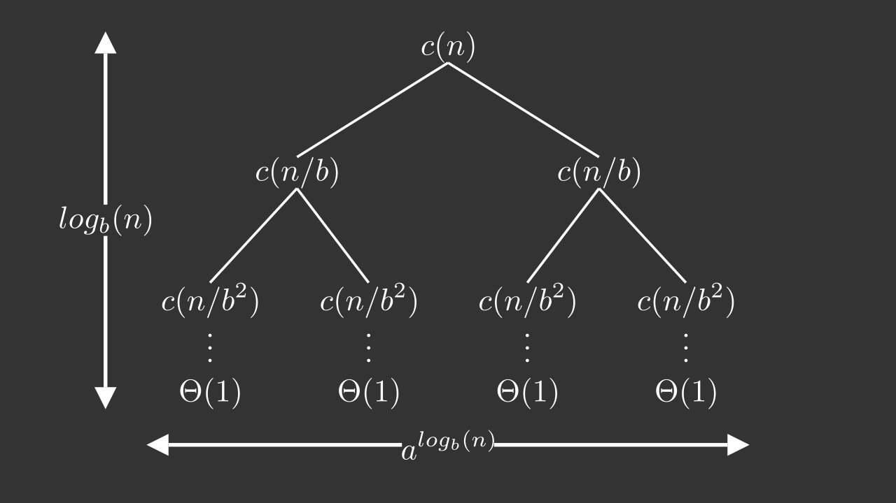

Divide the problem into one or more subproblems that are smaller instances of the same problem.
Conquer the subproblems by solving them recursively.
Combine the subproblem solutions to form a solution to the original problem.
<iframe width="560" height="315" src="https://www.youtube.com/embed/vTNFajiyXtU" title="YouTube video player" frameborder="0" allow="accelerometer; autoplay; clipboard-write; encrypted-media; gyroscope; picture-in-picture" allowfullscreen></iframe>
The master method provides a "cookbook" method for solving algorithmic recurrences of the form
\[ T(n) = aT(n/b) + c(n) \]where \(a>0\) and \(b>1\) are constants.
We call \(c(n)\) a driving function, and we call a recurrence of this general form a master recurrence

\[ T(n) = \Theta(n^{log_b(a)}) + \sum_{j=0}^{log_b(n-1)} a^jc(n/b^j) \]Informally:
- If the problem gets easier \(\Rightarrow\) \(T(n) = \Theta(c(n))\)
- If the problem gets harder \(\Rightarrow\) \(T(n) = \Theta(n^{log_b(a)})\)
- If the hardness is evenly distributed \(\Rightarrow\) \(T(n) = log_b(n)\cdot\Theta(n^{log_b(a)})\)
Formally:
- If there exists a constant \(\epsilon > 0\) such that \(c(n) = O(n^{log_b(a-\epsilon)})\), then \(T(n) = \Theta(n^{log_b(a)})\)
- If there exists a constant \(k \geq 0\) such that \(c(n) = O(n^{log_b(a)}\ln^kn)\), then \(T(n) = \Theta(n^{log_b(a)}\ln^{k+1}n)\)
- If there exists a constant \(\epsilon > 0\) such that \(c(n) = \Omega(n^{log_b(a+\epsilon)})\), and if \(c(n)\) additionally satisfies the regularity condition \(ac(n/b) = dc(n)\) for some constant \(d<1\) and all sufficiently large \(n\), then \(T(n) = \Theta(c(n))\)